Tol (2018) offers carefully chosen schemes, ready for each type of data, with colours that are:
All the scales presented in Paul Tol’s technical note (issue 3.1, 2018-09-23) are implemented here, for use with base R graphics or ggplot2.
According to Paul Tol’s technical note, the bright, contrast, vibrant and muted colour schemes are colour-blind safe.
The light colour scheme is reasonably distinct for both normal or colour-blind vision and is intended to fill labelled cells.
The pale and dark schemes are not very distinct in either normal or colour-blind vision and should be used as a text background or to highlight a cell in a table.
The qualitative colour schemes must be used as given (no interpolation): colours are picked up to the maximum number of supported values. Refer to the original document for details about the recommended uses (see references).
| Scheme | Max. colours |
|---|---|
| bright | 7 |
| contrast | 3 |
| vibrant | 7 |
| muted | 9 |
| pale | 6 |
| dark | 6 |
| light | 9 |
bright <- colour("bright")
plot_scheme(bright(7), colours = TRUE, names = TRUE, size = 0.9)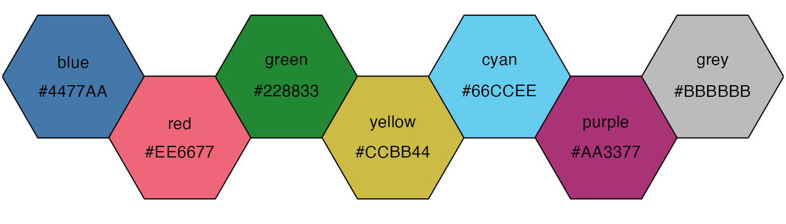
contrast <- colour("contrast")
plot_scheme(contrast(3), colours = TRUE, names = TRUE, size = 0.9)
vibrant <- colour("vibrant")
plot_scheme(vibrant(7), colours = TRUE, names = TRUE, size = 0.9)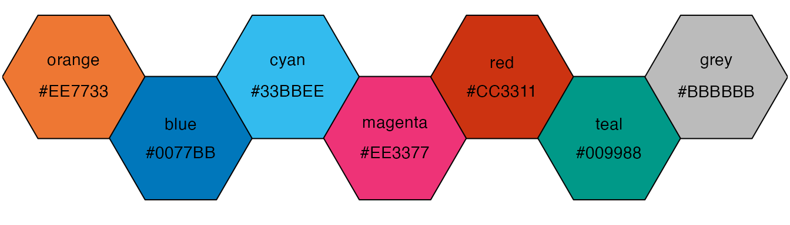
muted <- colour("muted")
plot_scheme(muted(9), colours = TRUE, names = TRUE, size = 0.9)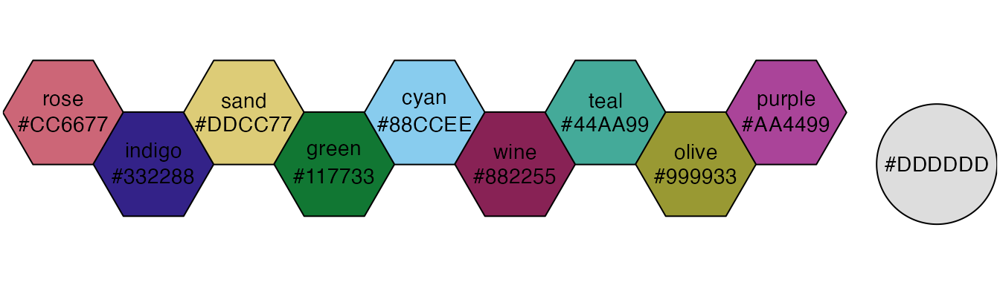
light <- colour("light")
plot_scheme(light(9), colours = TRUE, names = TRUE, size = 0.9)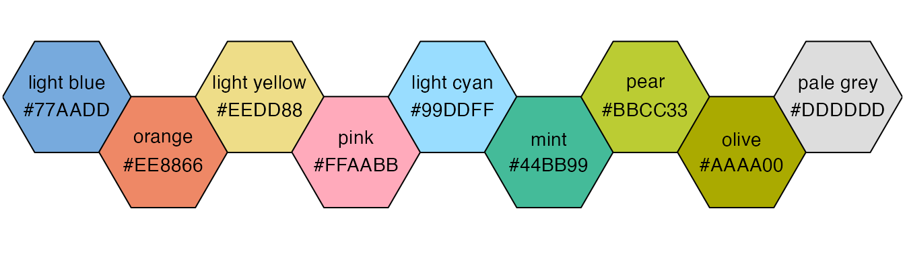
pale <- colour("pale")
plot_scheme(pale(6), colours = TRUE, names = TRUE, size = 0.9)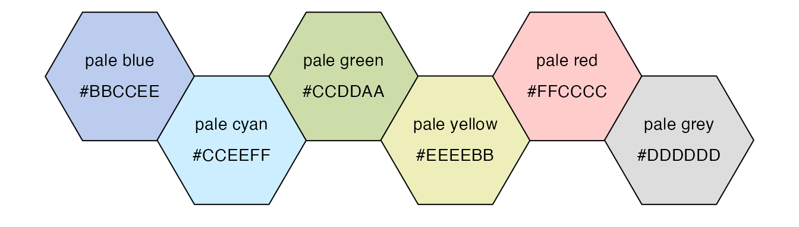
dark <- colour("dark")
plot_scheme(dark(6), colours = TRUE, names = TRUE, size = 0.9)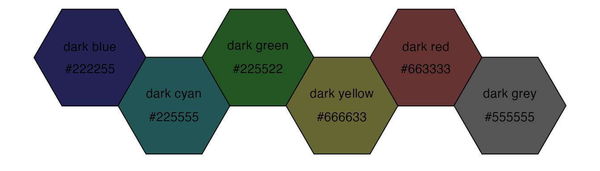
If more colours than defined are needed from a given scheme, the colour coordinates are linearly interpolated to provide a continuous version of the scheme.
| Scheme | Num. of colours | Bad data |
|---|---|---|
| sunset | 11 | #FFFFFF |
| BuRd | 9 | #FFEE99 |
| PRGn | 9 | #FFEE99 |
If more colours than defined are needed from a given scheme, the colour coordinates are linearly interpolated to provide a continuous version of the scheme, with the exception of the discrete rainbow scheme (see below).
| Scheme | Num. of colours | Bad data |
|---|---|---|
| YlOrBr | 9 | #888888 |
| iridescent | 23 | #999999 |
| discrete rainbow | 23 | #777777 |
| smooth rainbow | 34 | #666666 |
iridescent <- colour("iridescent")
plot_scheme(iridescent(23), colours = TRUE, size = 0.5)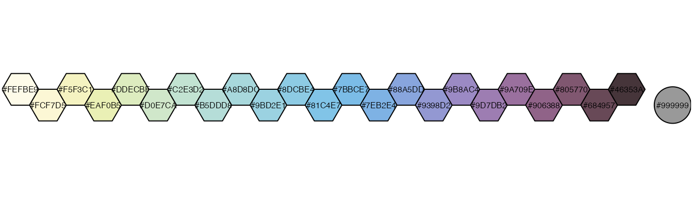
As a general rule, ordered data should not be represented using a rainbow scheme. There are three main arguments against such use (Tol 2018):
If such use cannot be avoided, Paul Tol’s technical note provides two colour schemes that are reasonably clear in colour-blind vision. To remain colour-blind safe, these two schemes must comply with the following conditions:
discrete_rainbow <- colour("discrete rainbow")
plot_scheme(discrete_rainbow(14), colours = TRUE, size = 0.7)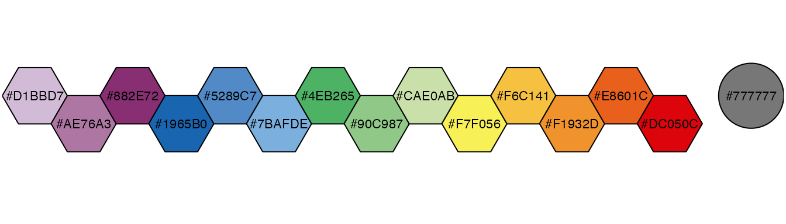
When using the smooth rainbow scheme:
smooth_rainbow <- colour("smooth rainbow")
# Start at purple instead of off-white
plot(smooth_rainbow(256, range = c(0.25, 1)))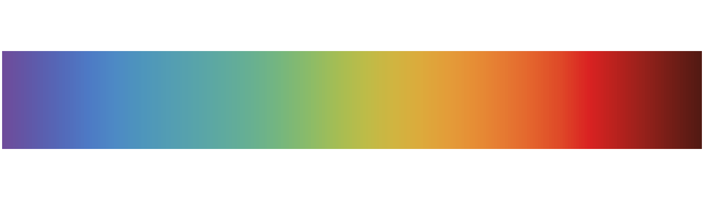
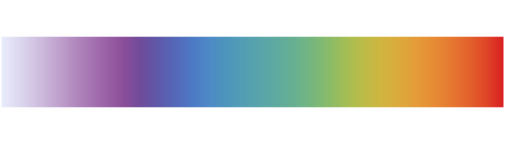
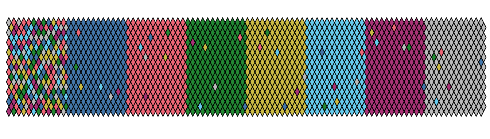
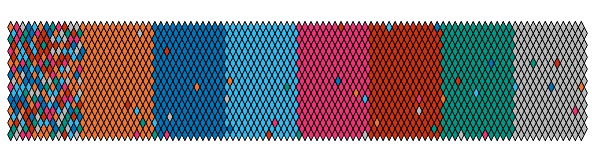
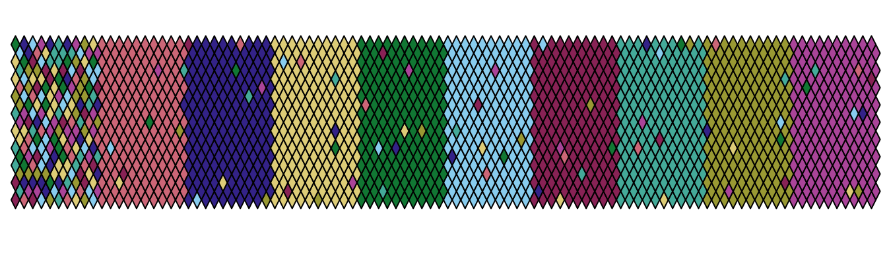
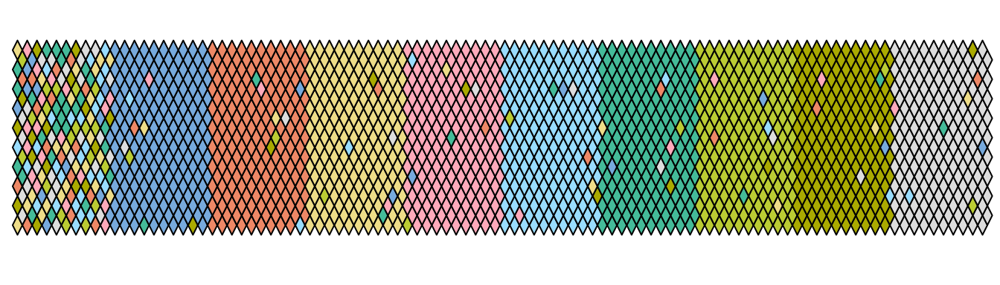
Diagnostic maps for the bright, vibrant, muted and light (from top to bottom) qualitative colour schemes.
Tol, Paul. 2018. “Colour Schemes.” Technical note SRON/EPS/TN/09-002 3.1. SRON. https://personal.sron.nl/~pault/.